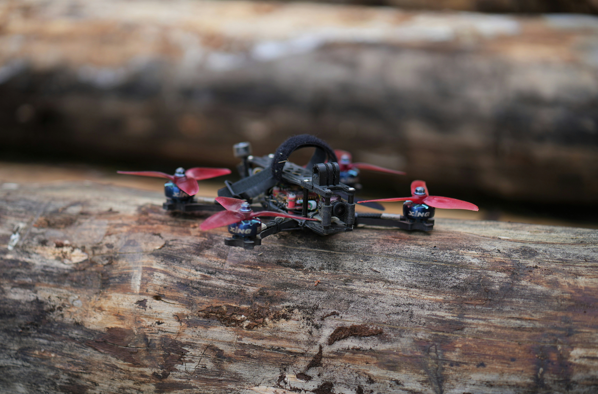
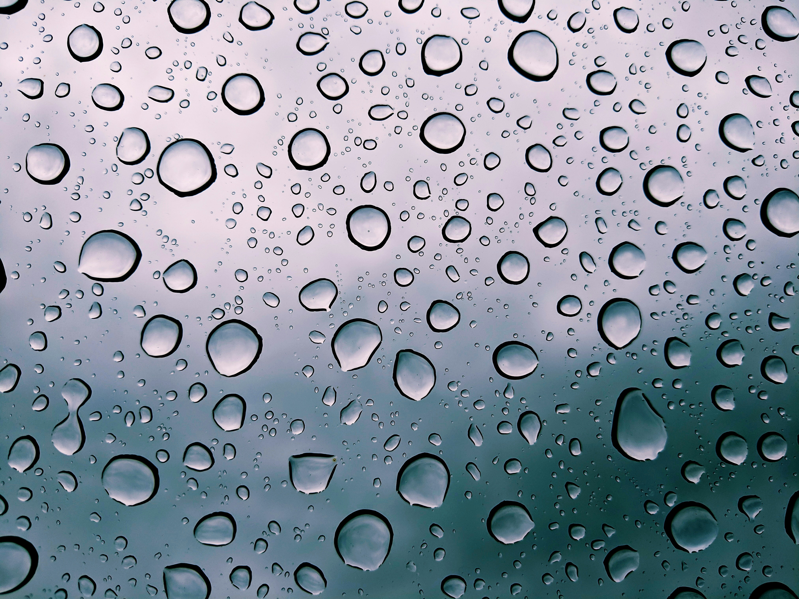

FPV Drones in Jamaica
October 2, 2024 by Carl Heron

First Person View drones, or FPV drones, joined the aviation hobby
around 2013 and became popular amongst hobbyist in 2015. Though it
has become 'popular', the most common form of drones around the world
especially Jamaica are those which are flown using line of sight and
some with a screen. It is uncommon for one to build a drone, and more
common for someone to puchase a commercially ready to fly drone which
requires little to no assembly from brands such as DJI, which is the
most popular drone building company worldwide.
In Jamaica, there are only a handful of persons that can say they are
apart of the hobby, and many that are unaware of the enjoyment to be
had, the technical aspects and learning opportunities for the youth of
our society and even the young at heart.
Some in our society will be able to see the light to our hobby and the
enjoyment to be had, while others may see the security risks that may
be introduced, but with proper understanding of the hobby and with
reasonable laws implemented everyone whether observers or pilots can
enjoy the hobby.
Effects of Rain on Drones
October 7, 2024 by Carl Heron

Rain can have a significant impact on the performance and longevity of
quadcopters (or drones). Flying in the rain introduces moisture into the
delicate electronic components of the quad, such as the motors, flight
controller, and camera. Water can short-circuit the electronics, leading
to malfunction or permanent damage. Additionally, rain adds weight to the
drone and affects its aerodynamics, reducing its ability to maintain stable
flight. This can make it difficult to control, especially for FPV (First-Person
View) flying, where visibility through a water-splattered camera lens is compromised.
Furthermore, rain can interfere with the radio signals between the quad and
its controller, potentially causing signal loss or increased latency. This
is particularly dangerous for FPV quads, as losing connection mid-flight could
result in crashes or the quad becoming unrecoverable. Despite some waterproofing
options or conformal coatings, it's always risky to fly in rainy conditions unless
the drone is specifically designed to withstand such environments. In general,
flying quads in rain should be avoided to protect your gear and ensure safety.